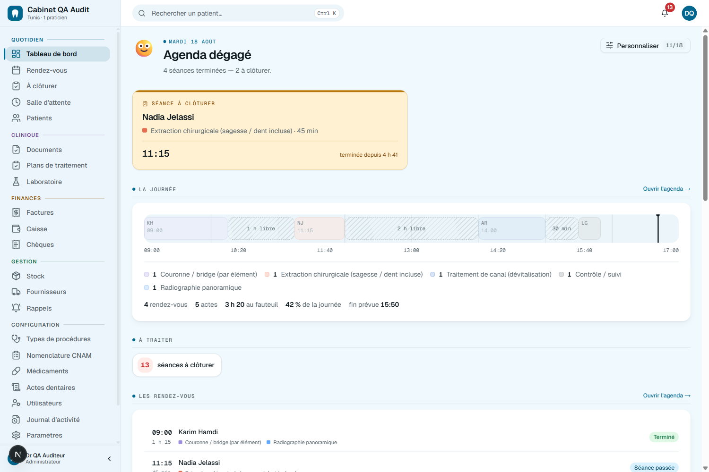
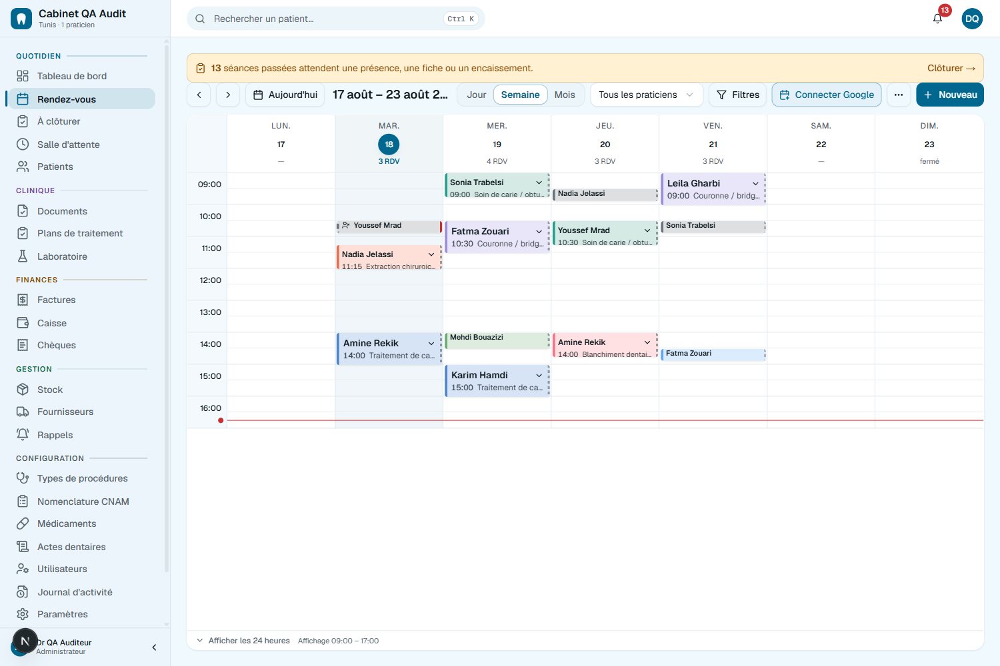
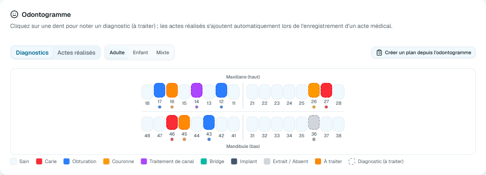
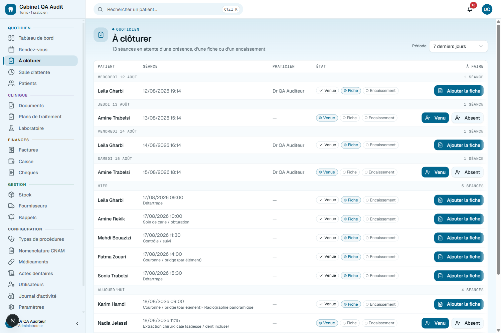
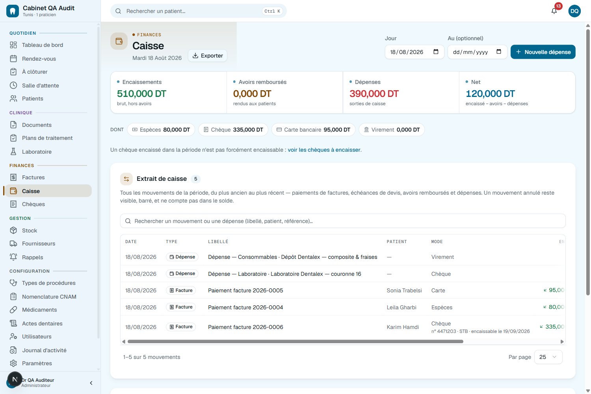
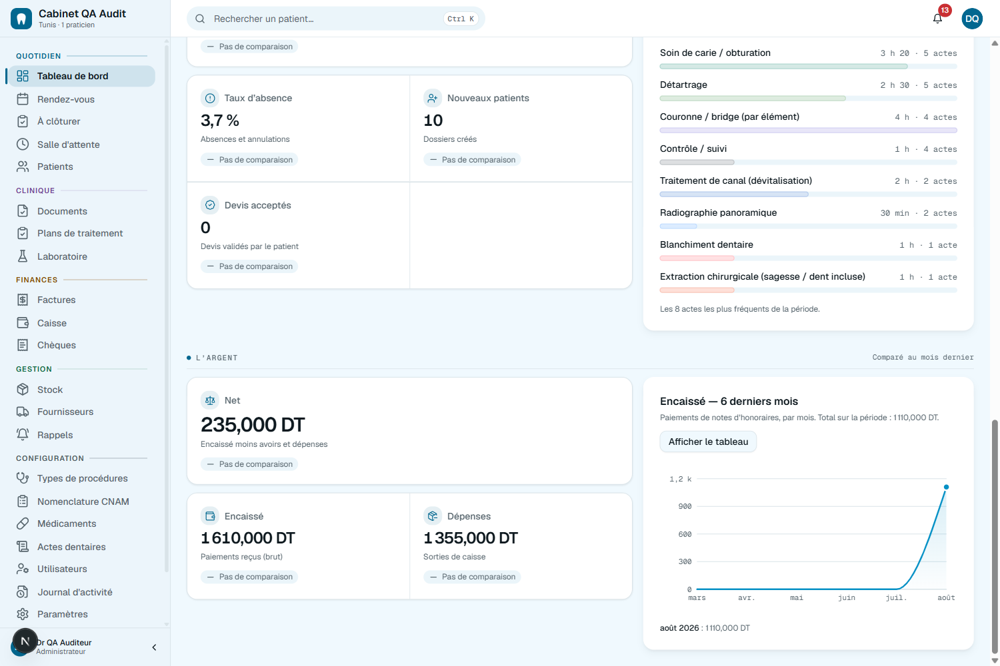

Votre cabinet, du premier café à la dernière facture.
Agenda, dossier patient, odontogramme, devis, CNAM, caisse, stock, laboratoire. Un seul logiciel, en français — et tout y est relié, donc rien ne se retape et rien ne se perd.

Ce qui change vraiment
Une seule saisie fait tout le tour.
Dans la plupart des cabinets, la même séance est écrite quatre fois : sur l'agenda, sur la fiche, sur le devis, puis sur le reçu. Ici elle est écrite une fois et chaque écran suivant la connaît déjà.
La fiche de soins produit la note d'honoraires, qui produit l'encaissement. Le montant n'est tapé qu'une fois.
Le tableau de bord, la caisse et le solde du patient lisent les mêmes écritures — ils ne peuvent pas se contredire.
Une modification à l'accueil apparaît immédiatement sur l'écran du fauteuil, sans rafraîchir.
La salle se remplit
Un agenda qui ne double-réserve jamais.
Jour, semaine, mois. Une séance porte plusieurs actes et calcule sa durée. Le créneau est verrouillé dans la base de données — pas seulement dans l'écran.

Séances multi-actes
« Détartrage + deux obturations » est une seule visite, avec sa vraie durée et sa vraie couleur.
Rappels SMS & WhatsApp
Plusieurs paliers — 24 h puis 6 h — et jamais entre 21 h et 8 h.
Google Calendar
Synchronisé dans les deux sens, avec un badge clair sur ce qui ne l'est pas encore.
Au fauteuil
Le dossier, dent par dent.
Un odontogramme adulte, enfant et mixte. On clique une dent pour noter un diagnostic ; les actes réalisés s'ajoutent tout seuls quand la fiche de soins est enregistrée. Et de ce même schéma on crée le devis.

Cinq documents en un clic
Ordonnance, certificat, lettre de liaison, note d'honoraires — et l'arrêt de travail sur le vrai formulaire CNAM P 061.
Radios, DICOM, empreintes 3D
Panoramiques, STL, consentements — classés par dossier, prévisualisés sans rien installer.
Le stock se déduit seul
Chaque acte connaît ses matériaux : enregistrer la fiche sort les consommables et écrit le mouvement.
Entre deux patients
Le logiciel sait ce qui n'est pas fini.
Une séance n'est clôturée que si trois questions ont une réponse : est-il venu, qu'a-t-on fait, combien a-t-il payé. La liste se construit toute seule à partir de ce qui manque, et ne pose qu'une question à la fois.

On ferme
La caisse dit où est l'argent. Chèques compris.
Pas trois chiffres opaques : l'extrait détaille chaque mouvement, espèces et chèques postdatés séparés, avec le numéro du chèque, la banque et la date d'encaissement.

Chèques postdatés
Tous ceux que vous détenez, classés par échéance : en retard, bientôt, plus tard, sans date.
Créances & relances
Qui doit combien, depuis quand. Chaque chiffre ouvre les dossiers qu'il a comptés.
L'argent se corrige
Un paiement mal saisi s'annule avec un motif et un auteur. Rien ne s'efface, tout se retrouve.
Le calme
Et le mois se raconte tout seul.
Taux d'absence, nouveaux patients, devis acceptés, net encaissé, répartition des actes, six mois de tendance. Comparé à la période précédente — et chaque chiffre est un lien vers les dossiers qu'il a comptés.

Rien à côté du logiciel
Tout ce qu'un cabinet fait dans une journée est déjà dedans.
Pas de cahier à côté, pas de fichier Excel parallèle, pas de deuxième abonnement. Voici l'inventaire complet, rangé comme dans l'application.
Et quand ça compte
Ça marche même sans internet.
Installé sur le poste du cabinet, le logiciel sert tout votre réseau depuis votre propre disque : la coupure ADSL n'arrête pas la journée. Ou hébergé, si vous préférez y accéder de chez vous.
Demain matin, 08:00.
Trente jours pour voir si votre cabinet respire mieux. Sans carte bancaire, et vos données repartent avec vous quand vous voulez.